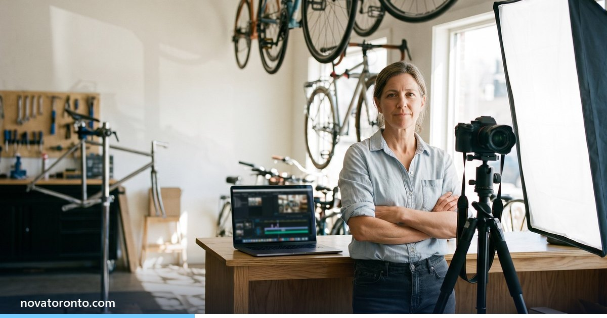

AI video ad or a Toronto videographer: what each costs
Published October 11, 2026 • By Rujal Tuladhar

You want a short video for your ads or the top of your website, and you have two very different quotes in front of you: a local videographer who will come to your shop with a camera, and an AI-made ad at a fraction of the price. Neither quote tells you what the other one leaves out.
I make AI video ads at Nova Toronto, so I have an obvious bias. To keep this honest, every price below comes from a page checked on October 2, 2026, with the currency noted, and the jobs where a real shoot is the better buy are marked.
$3,025 to $8,387.50 filmed
Lapse Productions' published Toronto packages for one shoot day plus editing
About $500 to $1,500 with AI
Published small-business prices for one finished AI-made short ad
Days against weeks
AI studios publish 2 to 7 days; Vidico's guide gives live action 4 to 8 weeks
Testimonials must be real
Canadian advertising rules ask for a genuine opinion from a real person
Get the rights in writing
A freelance videographer keeps the copyright unless the contract assigns it
AI video ad or a Toronto videographer: what each costs at a glance — the short version.
Published Toronto prices for a short filmed ad
Toronto studios that publish their prices land in a similar band. Lapse Productions lists three packages on a page updated in August 2026: $3,025 for a strategy session, a full shoot day with one videographer and basic editing; $6,297.50 with a producer, cinematographer and production assistant; and $8,387.50 once an audio operator and more complex editing are added. Each produces a finished video of 60 seconds to three minutes. The page does not mention tax, so ask whether HST is on top. Uptown Media put basic commercial projects at CAD 2,787 to CAD 6,967 in its 2025 guide.
Day rates are where the sources disagree. 852 Tangram, a Toronto agency, puts a solo videographer at $1,200 to $2,500 a day. TypicalCosts estimates $500 to $1,200 for a solo shooter, and On Point Video publishes a $900 videography day and an $850 editing day. Lapse's day-rate guide explains part of the gap: $300 to $500 buys an entry-level shooter, while $1,500 to $2,500 and up buys someone who films commercials.
The figure to remember is 852 Tangram's: the shoot day is usually only 40 to 50 per cent of the total project cost, with scripting, permits and editing often quoted on top. Where a Toronto company writes a bare dollar sign, I have read it as Canadian.
Published prices for an AI-produced ad
AI prices are harder to compare because most are published abroad. Gnidak Studio, which runs client relations from Toronto, charges from $30 per second of finished video, so a 30-second ad starts at $900 with voiceover, music, subtitles and colour grade included. MAW AI Studios lists a single 15-to-60-second video from $1,500. Neither page states a currency, and MAW says its clients are in the US, the UK and the Gulf, so do not assume Canadian dollars.
At agency level the numbers climb. California's Lemonlight starts at US$5,000 for a 30-second AI brand video, roughly C$7,100 at the Bank of Canada's October 1 rate of 1.4243. Rome's MaiDreamsLab shows €1,500 to €3,500 in its pricing article and €2,000 to €4,500 in its service menu for a 15-to-60-second spot. End to end, that is about C$2,400 to C$7,200.
Lemonlight adds that the AI tools themselves cost US$20 to US$300 a month, but a subscription does not include scripting, creative direction or revision cycles. That is the work you pay a person for. For reference, Nova Toronto's AI video ads are fixed at $497, $897 and $1,497 plus applicable tax. That lowest tier and MAW's entry price are the two ends of the $500 to $1,500 range I use in this post.
What a shoot gives you that AI cannot
AI is weakest exactly where a local business is strongest: real people in a real place. Lemonlight, which sells AI production, says filming still wins when authentic human connection is the goal and for live-action scenes that need physical staging. inReels, an AI ad tool, lists testimonials and demonstrations as content that needs a real human presence.
In Canada, testimonials are also a legal matter. The Competition Bureau says section 74.02 of the Competition Act prohibits publishing a testimonial unless the person has already given it and has approved its use in writing, and a corporation's penalty for a first violation can reach $10 million or more. Clause 7 of the Canadian Code of Advertising Standards requires a testimonial to reflect the genuine, reasonably current opinion of whoever gives it. My reading, which is not legal advice: an AI-generated "customer" has no opinion to reflect, so a happy-client video should be filmed with the real client. If you are unsure about a specific ad, check with a lawyer before it runs.
The platforms flag it as well. Meta says, in a post it updated in June 2026, that it applies an "AI info" label, shown in the "About this ad" panel, to ads it automatically detects were made or edited with third-party AI tools.
Turnaround, revisions and usage rights compared
Turnaround. Vidico's 2026 pricing guide gives live-action video four to eight weeks, and Uptown Media allows about a week of pre-production plus three to four days per revision round. AI providers publish days: Gnidak advertises 24 to 48 hours of production and a first delivery in two to three days, MAW five to seven days, and MaiDreamsLab the same.
Revisions. Lapse includes two rounds. Vidico, an Australian company that prices in US dollars, says most agencies include two or three and charge US$400 to US$1,000 for each extra one. On the AI side, Gnidak includes one round and MAW two.
Usage rights. With a shoot, do not assume you own the footage. Copibec, the Quebec copyright collective, explains that a freelance videographer remains the copyright owner unless the contract assigns the rights to you. With AI, the open question is whether copyright exists at all: the federal government's 2025 report on copyright and generative AI says Canadian case law suggests an author must be a human exercising skill and judgment. Gnidak states that full commercial rights transfer with every delivery, and MaiDreamsLab writes an unlimited commercial licence into its contracts. That is the wording to look for. This is general information, so have a lawyer read any contract that matters to you.
Which one fits your job
- Social ad. AI. You need several versions to test, quickly, and at $500 to $1,500 each you can afford to replace the ones that flop.
- Website hero video. A restaurant, clinic or showroom should film the real space. A product or service business can use AI.
- TV spot. Lean towards a shoot, or a studio that delivers broadcast masters. thinktv clears commercials on behalf of Canadian broadcasters, and Black Box Productions, a Montreal and Toronto producer, notes that a Telecaster number and closed captioning are required and that final files should arrive at least five business days before the air date. TypicalCosts puts a 60-second Toronto commercial at $10,000 to $50,000.
- Film once, then remix. Often the best value. Pay for one shoot day to capture your team, your premises and a couple of real customer testimonials, then use AI for seasonal offers and ad variations for the rest of the year.
Who should not bother with either: a business with no ad budget to put behind the video and no page for it to sit on. A $3,000 shoot and a $500 AI ad will both go unwatched.
The bottom line
For a GTA small business, the published numbers put a filmed ad at about $3,000 to $8,500 and an AI-made one at roughly $500 to $1,500, with the AI version arriving in days instead of weeks. The shoot earns its price when real staff, real premises or a real customer are the point of the video. Most other short ads are a fair job for AI. The AI video ads section on our homepage lists Nova Toronto's three fixed prices (plus applicable tax), and the free AI course for beginners walks through the tools if you would rather make one yourself. Not sure which route suits your ad? Book a free consultation and I will say so plainly if a videographer is the better choice.
Common questions
How much does a short video ad cost to produce in Toronto?
Toronto studios that publish prices charge roughly $3,000 to $8,500 for a filmed and edited short video. Lapse Productions lists packages at $3,025, $6,297.50 and $8,387.50. A finished AI-made short ad runs roughly $500 to $1,500.
Is an AI video ad really cheaper than hiring a videographer?
For the ad itself, yes: about $500 to $1,500 for a finished short AI ad, against $3,025 and up for a one-day Toronto shoot with editing. The gap narrows at agency level, where Lemonlight starts at US$5,000 for a 30-second AI video. AI cannot film your real staff, premises or customers, so cheaper is not always right.
Can I use an AI-generated person as a customer testimonial?
It is a bad idea. The Competition Bureau says a testimonial may only be published if the person has already given it and approved its use in writing, and the Canadian Code of Advertising Standards requires it to reflect that person's genuine opinion. In my reading an AI-generated customer cannot meet either test. Film real customers, get written permission, and check with a lawyer if unsure.
Who owns the video once it is finished?
It depends on the contract. A freelance videographer keeps the copyright in filmed footage unless the contract assigns it to you. For AI video, a 2025 federal report says Canadian case law suggests an author must be a human, so copyright in a fully AI-made video is uncertain. Either way, ask for a written clause granting full commercial use, and have a lawyer read it.
Want this working in your business?
Book a free 30-minute call and we'll map out which of these would actually save you time and win you customers.
Book a Free ConsultationNew to AI? Take our free 7-lesson AI course for beginners.
Sources: Lapse Productions: How much does video production cost? (2026) • Lapse Productions: Videographer day rates in Toronto • Uptown Media: Affordable video production in Toronto 2025 • 852 Tangram: Video production day rates Toronto 2026 • TypicalCosts: Video production cost in Toronto, Ontario • On Point Video Productions: Video production pricing • Gnidak Studio: AI video production pricing and terms • MAW AI Studios: AI video production packages • Lemonlight: AI video production cost, what brands should expect • MaiDreamsLab: How much does an AI-produced commercial cost in 2026 • Bank of Canada: Daily exchange rates • inReels: How much do AI video ads cost? Full breakdown 2026 • Competition Bureau Canada: Use of tests or testimonials • Ad Standards: The Canadian Code of Advertising Standards • Meta: Expanding GenAI transparency for Meta's ads products • Vidico: Promo video cost, what you'll pay in 2026 • Copibec: Copyright provisions in contracts • Innovation, Science and Economic Development Canada: Copyright in the age of generative AI, what we heard report • thinktv: thinktv Clearance • Black Box Productions: How to make your first broadcast TV commercial in Canada